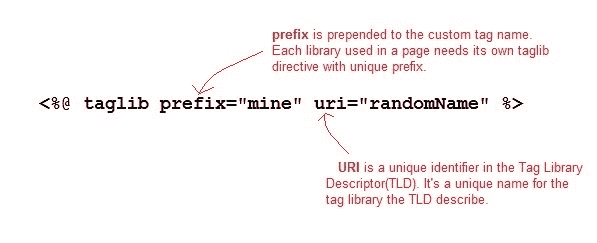

JSP Taglib 指令
原文：https://www.studytonight.com/jsp/jsp-taglib-directive.php
taglib 指令用于定义当前 JSP 页面使用的标签库。一个 JSP 页面可能包含几个标签库。JavaServer Pages 标准标签库(JSTL)，是一个有用的 JSP 标签的集合，它提供了许多常用的核心功能。它支持许多一般的结构化任务，例如迭代和条件、用于操作 XML 文档的现成标记、国际化标记以及执行 SQL 操作。taglib 指令的语法是:
<%@ taglib prefix="prefixOfTag" uri="uriOfTagLibrary" %>
前缀用于将自定义标记与其他库自定义标记区分开来。前缀加在自定义标记名称的前面。每个自定义标记都必须有前缀。
URI 是标签库的唯一名称。

你可以给前缀起任何名字，但它应该是唯一的。
JSP:使用 Taglib 指令
要在你的应用中使用 JSTL，你必须在你的网络应用/WEB-INF/lib目录中有jstl.jar。从阿帕奇标准 Taglib 页面下载 jar 文件。
有许多现成的 JST 库可供您使用，让您的生活更加轻松。以下是对不同组的 JST 库的广泛划分:
- 核心标签-URI→http://java.sun.com/jsp/jstl/core
- 格式化标签-URI→http://java.sun.com/jsp/jstl/fmt
- SQL 标记 uri→http://Java . sun . com/JSP/jstl/SQL
- XML 标签-URI→http://java.sun.com/jsp/jstl/xml
- JSTL 函数-URI→http://java.sun.com/jsp/jstl/functions
可以在这里查看完整的 JST 库: Apache 标准 Taglib API